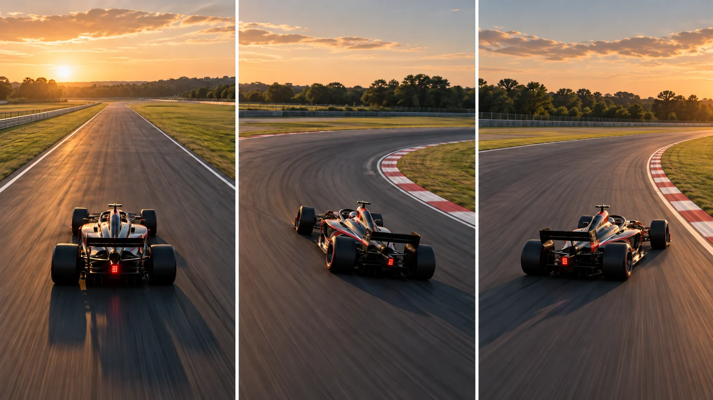

F03 · 고급 · FPV
한 바퀴의 추격을 완성하기
직선과 코너를 나누어 피사체의 화면 크기와 각도를 유지하는 상대 이동 조건을 읽는다.
그림에서 확인할 세 가지추적은 직선 속도만으로 완성되지 않는다
1직선의 기준 크기
첫 화면의 차체 크기와 곧은 도로를 기준으로 삼는다. 차량이 화면에 안정적으로 남는 동안 주변 지형이 얼마나 많이 보이는지 함께 살핀다.
2감속과 보는 각도
가운데 화면에서는 차체와 도로의 방향이 함께 달라진다. 차를 따라갔다는 사실보다 코너에서도 차체의 모양이 분명하게 남는지 비교한다.
3탈출 뒤의 여백
마지막 화면에서 차체 앞의 공간과 코너 출구를 본다. 회전을 끝낸 뒤에도 다음 진행 방향이 읽혀야 한 동작의 흐름이 이어진다.
촬영 설계
촬영을 이렇게 설계한다
구간별 요구를 나눈다
가상 서킷을 직선·감속·코너·탈출로 구분한다. 직선에서 속도가 맞아도 코너에서 차량이 프레임 끝으로 밀릴 수 있으므로 각 구간의 촬영 실패 조건을 별도로 기록한다.
상대 위치를 그린다
차량 경로를 그린 뒤 같은 선 위에 드론을 놓지 말고 원하는 차체 각도가 보이는 위치를 따로 표시한다. 촬영안에서는 피사체 크기와 배경 변화가 각각 어떻게 달라지는지 비교한다.
출구 화면을 확인한다
곡선의 진입만 성공 기준으로 삼지 않는다. 가상 촬영에서는 코너 출구에서 차량의 앞 여백과 크기가 회복되는지 확인하고 진입 위치나 선회 시작을 한 번에 하나씩 수정한다.
제작진은 포뮬러원 차량의 한 바퀴를 추적하려고 반복 시험으로 비행 지속성과 조향을 다듬었다.
원본 영상RBD1 vs Max Verstappen
1. 차체 크기
직선과 코너에서 차체가 차지하는 비율을 비교한다. 급격히 커지거나 작아지면 카메라와 차량의 상대 거리 변화가 드러난다.
2. 차체를 보는 각도
차량이 선회할 때 보이는 차체의 면이 어떻게 달라지는지 본다. 차량 경로를 따라가는 것과 원하는 각도를 유지하는 것은 다른 과제다.
3. 코너 출구
차량이 회전을 끝낸 뒤 앞쪽 여백이 남는지 본다. 진입이 매끄러워도 출구에서 잘리면 한 쇼트의 설계가 끝난 것이 아니다.
재생이 제한되면 원본 영상 새 창을 이용하세요.
제작진 설명 · 한국어 요약 번역
한 바퀴 추적을 위한 개발 과정
요청
번역 요약: Red Bull의 요청은 F1 차량을 빠른 속도로 한 바퀴 내내 추적할 수 있느냐는 것이었다고 한다.
개발 과정
제작사는 빠른 드론 전문가의 자문을 받아 약 8개월 동안 설계와 시험을 이어갔다.
전자부품, 덮개 형태, 무게, 속도, 비행 시간, 거리 사이의 균형을 맞추는 것이 핵심이었다.
사전 시험
실제 서킷 도전 전에는 자체 시험장에서 여러 번 성공적인 비행을 했다.
제작진 설명 · 한국어 요약 번역
서킷 도전과 개선
첫 도전
번역 요약: 2023년 9월 실버스톤 첫 도전에서 드론은 한 바퀴를 따라가며 시속 310km에 도달했다고 한다.
이때 조향, 제동, 카메라 각도 제어 데이터를 기록해 개선 항목으로 삼았다.
개선
이후 설계 변경과 업그레이드를 거쳐 2024년 2월 두 번째 한 바퀴를 완성했다.
악천후와 팀
두 번째는 비와 강풍 속에서 진행되어 첫 도전보다 어려운 조건이었다고 소개한다.
현장에는 조종사 외에 엔지니어와 릴레이 드론 조종사가 함께했다.
Kling 프롬프트단문 인과 체인 · 16:9
내가 직접 만들어 본다
차가 직선에서 코너로 들어갔다 빠져나오는 동안 차체의 화면 크기와 보이는 각도를 유지하며 따라간다.
- S01붉은 스포츠카가 마른 산악 도로의 직선 구간에 서 있다.
- S02차는 화면 아래쪽 중앙에서 앞을 향하고 있다.
- S03드론 시점은 차의 뒤쪽 위에서 차를 내려다본다.
- S04도로는 차 앞에서 오른쪽으로 크게 휘어 있다.
- S05도로 옆에는 마른 풀과 낮은 산이 이어진다.
- S06해 질 무렵의 낮은 햇빛이 옆에서 비춘다.
- S07가로 16:9 화면에서 차 앞쪽에 도로의 빈 공간이 넓게 남아 있다.
[네거티브]
- 차가 여러 대로 늘어나거나 다른 종류의 차가 되는 것 금지
- 차가 화면 가운데 위나 한쪽 끝으로 치우치는 것 금지
- 시점이 차 옆이나 정면으로 바뀌는 것 금지
- 도로가 왼쪽으로 휘거나 직선으로 끝나는 것 금지
- 도로 옆에 건물이나 사람이 생기는 것 금지
- 밤이거나 정오처럼 강한 빛이 되는 것 금지
- 차 앞의 도로 공간이 막히거나 좁아지는 것 금지
- S01A red sports car stands on a straight section of a dry mountain road.
- S02The car is at the lower center of the frame, facing forward.
- S03The camera viewpoint looks down at the car from behind and above.
- S04The road bends sharply to the right ahead of the car.
- S05Dry grass and low mountains continue along the road.
- S06Low sunlight of the early evening comes from the side.
- S07In the horizontal 16:9 frame, a wide empty stretch of road remains ahead of the car.
[Negative]
- Do not add more cars or turn it into a different kind of car.
- Do not push the car to the upper middle or to one edge of the frame.
- Do not move the viewpoint to the side or the front of the car.
- Do not bend the road to the left or end it as a straight line.
- Do not add buildings or people beside the road.
- Do not make it night or lit by harsh noon light.
- Do not block or narrow the open road ahead of the car.
- S01영상은 첫 프레임의 구도에서 시작한다.
- S02화면에 드론 기체는 나오지 않는다.
- S03붉은 차가 직선 도로에서 앞으로 가속한다.
- S04카메라는 차의 뒤쪽 위에서 같은 거리를 두고 따라간다.
- S05차가 커브 앞에서 속도를 줄인다.
- S06카메라도 함께 속도를 줄이기 때문에 차체의 화면 크기는 거의 변하지 않는다.
- S07차가 오른쪽으로 코너를 돌며 차체의 옆면이 보이기 시작한다.
- S08카메라는 차의 바깥쪽으로 옮겨 가서 차체가 비스듬하게 보이는 각도를 유지한다.
- S09코너의 끝에서 차가 다시 가속하며 직선으로 빠져나간다.
- S10그래서 차 앞쪽에 도로의 빈 공간이 다시 넓어진다.
- S11차는 영상 내내 화면에서 잘리지 않는다.
- S12차의 색과 모양, 도로와 산의 모습은 유지된다.
[네거티브]
- 첫 장면과 다른 구도에서 시작하는 것 금지
- 화면에 드론 기체가 나타나는 것 금지
- 차가 후진하거나 방향을 바꾸는 것 금지
- 카메라가 차 앞으로 나가거나 거리를 바꾸는 것 금지
- 차가 급정거하거나 멈추는 것 금지
- 차가 커지거나 작아지거나 화면 밖으로 밀려나는 것 금지
- 차가 왼쪽으로 돌거나 옆으로 미끄러지는 것 금지
- 카메라가 차 안쪽으로 파고들거나 차를 놓치는 것 금지
- 차가 코너에서 멈추거나 되돌아가는 것 금지
- 빈 공간이 좁은 채로 끝나는 것 금지
- 차가 화면에서 잘리거나 가려지는 것 금지
- 차의 색, 모양, 도로, 산이 바뀌는 것 금지
- S01The video starts from the composition of the first frame.
- S02No drone body appears on the screen.
- S03The red car accelerates forward on the straight road.
- S04The camera follows from behind and above, keeping the same distance.
- S05The car slows down before the curve.
- S06Because the camera slows down with it, the car's size in the frame barely changes.
- S07The car turns right through the corner, and the side of its body begins to show.
- S08The camera shifts to the outside of the car and keeps an angle where the body is seen diagonally.
- S09At the end of the corner, the car accelerates again and exits onto the straight.
- S10So the empty stretch of road ahead of the car widens again.
- S11The car is never cut off by the frame during the whole video.
- S12The color and shape of the car and the look of the road and mountains remain unchanged.
[Negative]
- Do not start from a composition different from the first frame.
- Do not show the drone body on the screen.
- Do not let the car reverse or change direction.
- Do not let the camera get ahead of the car or change the distance.
- Do not let the car brake hard or stop.
- Do not let the car grow, shrink, or be pushed out of the frame.
- Do not let the car turn left or slide sideways.
- Do not let the camera cut inside the car's line or lose the car.
- Do not let the car stop or go back in the corner.
- Do not end with the open space still narrow.
- Do not cut the car off or hide it.
- Do not change the car's color or shape or the road and mountains.
- S01산길 직선 도로 끝에 급한 코너가 있다.
- S02자동차 한 대가 직선을 달려 코너로 들어간다.
- S03영상은 하나의 연속 쇼트다.
- S04화면에 드론 기체는 나오지 않는다.
- S05처음 10초 동안 카메라는 자동차 뒤쪽 비스듬한 자리에서 따라간다.
- S06직선에서는 자동차 크기가 일정하게 유지된다.
- S07다음 10초 동안 자동차가 감속하며 코너에 들어간다.
- S08자동차가 방향을 틀기 때문에 카메라도 바깥쪽으로 돈다.
- S09카메라가 함께 돌아서 자동차는 프레임 끝으로 밀리지 않는다.
- S10감속해도 차체 옆면의 모양이 또렷하게 남는다.
- S11마지막 10초 동안 자동차가 코너를 빠져나간다.
- S12자동차가 가속하자 카메라도 거리를 다시 맞춘다.
- S13그 결과 자동차 앞에 여백이 생기고 크기가 처음 상태로 돌아온다.
[네거티브]
- 직선과 코너가 뒤섞인 구불구불한 길로 보이는 것 금지
- 자동차가 두 대가 되거나 코너 앞에서 멈추는 것 금지
- 컷이 바뀌어 추격이 여러 쇼트로 나뉘는 것 금지
- 화면에 드론 기체가 나타나는 것 금지
- 카메라가 자동차 바로 위나 정면으로 옮겨 각도가 달라지는 것 금지
- 직선에서 자동차가 커졌다 작아졌다 하는 것 금지
- 자동차가 같은 속도 그대로 코너를 도는 것 금지
- 자동차가 돌아도 카메라가 직진해 차가 화면 밖으로 나가는 것 금지
- 코너에서 자동차가 프레임 끝으로 밀리는 것 금지
- 감속 중에 차체가 가려지거나 흐려져 모양을 잃는 것 금지
- 자동차가 코너 안에서 멈추거나 화면 밖으로 사라지는 것 금지
- 출구에서 카메라가 뒤처져 자동차가 멀리 작아지는 것 금지
- 출구에서 자동차가 프레임 앞쪽 끝에 붙어 여백이 없는 것 금지
- S01영상은 FPV 시점의 하나의 연속 쇼트다.
- S02화면에 드론 기체는 나오지 않는다.
- S03산길 직선 도로 끝에 급한 코너가 있다.
- S04자동차 한 대가 직선을 질주해 코너로 들어간다.
- S05처음 10초 동안 카메라는 자동차 뒤 비스듬한 자리를 질주한다.
- S06카메라는 가드레일 위를 스치며 자동차와 나란히 달린다.
- S07직선에서는 자동차 크기가 일정하게 유지된다.
- S08카메라는 직선에서 점점 속도를 높인다.
- S09다음 10초 동안 자동차가 급감속하며 코너에 파고든다.
- S10자동차가 방향을 틀기 때문에 카메라도 바깥쪽으로 쏟아지듯 돈다.
- S11카메라는 자동차 옆면을 놓치지 않고 바짝 붙는다.
- S12카메라가 옆으로 기울며 도로이 비스듬해진다.
- S13기울기가 커지자 하늘이 머리 위로 뒤집힌다.
- S14한 바퀴를 돌아 도로이 다시 아래로 돌아온다.
- S15마지막 10초 동안 자동차가 코너를 빠져나가 가속한다.
- S16카메라는 자동차를 따라 급가속해 거리를 다시 맞춘다.
- S17자동차 앞에 여백이 생기고 크기가 처음으로 돌아온다.
- S18그 결과 직선과 코너와 출구가 한 추격으로 이어진다.
[네거티브]
- 영상이 여러 컷으로 끊겨 이어지는 것 금지
- 화면에 드론 기체가 나타나는 것 금지
- 도로와 코너가 한 화면에 없는 것 금지
- 자동차가 천천히 굴러가는 것 금지
- 카메라가 차에서 멀리 떨어져 따라가는 것 금지
- 난간과 멀리 떨어져 평온하게 나는 것 금지
- 직선에서 자동차 크기가 계속 변하는 것 금지
- 속도가 일정해 가속이 느껴지지 않는 것 금지
- 자동차가 감속 없이 코너를 지나는 것 금지
- 카메라가 직진해 자동차를 놓치는 것 금지
- 자동차가 프레임 끝으로 밀려나는 것 금지
- 기울기 없이 화면이 수평으로만 흐르는 것 금지
- 뒤집힘 없이 장면이 밀려 지나가기만 하는 것 금지
- 한 바퀴가 끝나도 방향이 돌아오지 않는 것 금지
- 코너 출구가 화면에 담기지 않는 것 금지
- 거리가 벌어져 자동차가 작아지는 것 금지
- 자동차 앞 여백이 없어 답답해지는 것 금지
- 구간마다 구도가 달라져 끊겨 보이는 것 금지
- S01붉은 스포츠카가 마른 산악 도로의 직선 구간에 서 있다.
- S02차는 화면 아래쪽 중앙에서 앞을 향하고 있다.
- S03드론 시점은 차의 뒤쪽 위에서 차를 내려다본다.
- S04도로는 차 앞에서 오른쪽으로 크게 휘어 있다.
- S05도로 옆에는 마른 풀과 낮은 산이 이어진다.
- S06해 질 무렵의 낮은 햇빛이 옆에서 비춘다.
- S07영상은 가로 16:9의 하나의 연속 쇼트다.
- S08화면에 드론 기체는 나오지 않는다.
- S09처음 10초 동안 붉은 차가 직선 도로에서 천천히 가속한다.
- S10카메라는 차의 뒤쪽 위에서 같은 거리를 두고 따라간다.
- S11그래서 차체의 화면 크기는 일정하게 유지된다.
- S12다음 10초 동안 차가 커브 앞에서 속도를 줄인다.
- S13카메라도 함께 속도를 줄이기 때문에 차체의 화면 크기는 거의 변하지 않는다.
- S14차가 오른쪽으로 코너를 돌며 차체의 옆면이 보이기 시작한다.
- S15카메라는 차의 바깥쪽으로 옮겨 가서 차체가 비스듬하게 보이는 각도를 유지한다.
- S16마지막 10초 동안 코너의 끝에서 차가 다시 가속하며 직선으로 빠져나간다.
- S17그래서 차 앞쪽에 도로의 빈 공간이 다시 넓어진다.
- S18영상은 차가 먼 직선 도로로 달려 나가는 장면에서 끝난다.
- S19차는 영상 내내 화면에서 잘리지 않는다.
- S20차의 색과 모양, 도로와 산의 모습은 유지된다.
[네거티브]
- 차가 여러 대로 늘어나거나 다른 종류의 차가 되는 것 금지
- 차가 화면 가운데 위나 한쪽 끝으로 치우치는 것 금지
- 시점이 차 옆이나 정면으로 바뀌는 것 금지
- 도로가 왼쪽으로 휘거나 직선으로 끝나는 것 금지
- 도로 옆에 건물이나 사람이 생기는 것 금지
- 밤이거나 정오처럼 강한 빛이 되는 것 금지
- 여러 쇼트로 쪼개지거나 컷이 들어가는 것 금지
- 화면에 드론 기체가 나타나는 것 금지
- 처음부터 급가속하거나 멈춰 서는 것 금지
- 카메라가 차 앞으로 나가거나 거리를 바꾸는 것 금지
- 차체의 화면 크기가 변하는 것 금지
- 차가 커브 앞에서 속도를 줄이지 않고 달리는 것 금지
- 차가 커지거나 작아지거나 화면 밖으로 밀려나는 것 금지
- 차가 왼쪽으로 돌거나 옆으로 미끄러지는 것 금지
- 카메라가 차 안쪽으로 파고들거나 차를 놓치는 것 금지
- 코너에서 차가 다시 뒤로 밀리거나 멈추는 것 금지
- 빈 공간이 좁은 채로 끝나는 것 금지
- 차가 먼 도로에서 사라지거나 컷으로 끝나는 것 금지
- 차가 화면에서 잘리거나 가려지는 것 금지
- 차의 색, 모양, 도로, 산이 바뀌는 것 금지
- S01A red sports car stands on a straight section of a dry mountain road.
- S02The car is at the lower center of the frame, facing forward.
- S03The camera viewpoint looks down at the car from behind and above.
- S04The road bends sharply to the right ahead of the car.
- S05Dry grass and low mountains continue along the road.
- S06Low sunlight of the early evening comes from the side.
- S07The video is one continuous shot in horizontal 16:9.
- S08No drone body appears on the screen.
- S09For the first 10 seconds, the red car slowly accelerates on the straight road.
- S10The camera follows from behind and above, keeping the same distance.
- S11So the car's size in the frame stays constant.
- S12For the next 10 seconds, the car slows down before the curve.
- S13Because the camera slows down with it, the car's size in the frame barely changes.
- S14The car turns right through the corner, and the side of its body begins to show.
- S15The camera shifts to the outside of the car and keeps an angle where the body is seen diagonally.
- S16During the last 10 seconds, the car accelerates again at the end of the corner and exits onto the straight.
- S17So the empty stretch of road ahead of the car widens again.
- S18The video ends with the car driving off along the long straight road.
- S19The car is never cut off by the frame during the whole video.
- S20The color and shape of the car and the look of the road and mountains remain unchanged.
[Negative]
- Do not add more cars or turn it into a different kind of car.
- Do not push the car to the upper middle or to one edge of the frame.
- Do not move the viewpoint to the side or the front of the car.
- Do not bend the road to the left or end it as a straight line.
- Do not add buildings or people beside the road.
- Do not make it night or lit by harsh noon light.
- Do not split into several shots or add cuts.
- Do not show the drone body on the screen.
- Do not accelerate hard from the start or stand still.
- Do not let the camera get ahead of the car or change the distance.
- Do not let the car's size in the frame change.
- Do not let the car run at full speed into the curve without slowing.
- Do not let the car grow, shrink, or be pushed out of the frame.
- Do not let the car turn left or slide sideways.
- Do not let the camera cut inside the car's line or lose the car.
- Do not let the car fall back or stop in the corner.
- Do not end with the open space still narrow.
- Do not make the car vanish on the far road or end with a cut.
- Do not cut the car off or hide it.
- Do not change the car's color or shape or the road and mountains.
결과에서 볼 것
- 코너 앞뒤에서 차체의 화면 크기가 비슷하게 유지됐는가
- 코너 도중 차체의 옆면이 읽히는가
- 코너를 빠져나온 뒤 차 앞에 여백이 회복됐는가